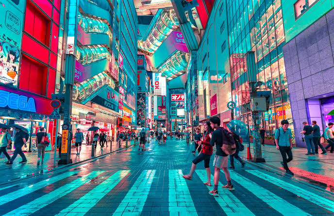
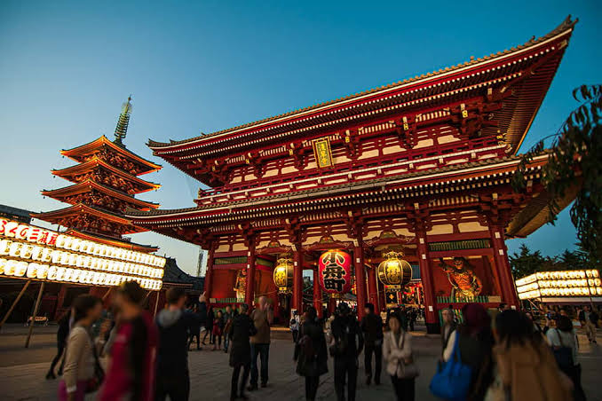
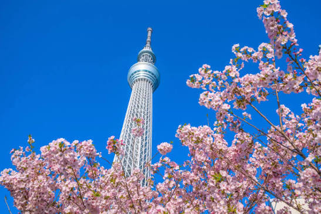
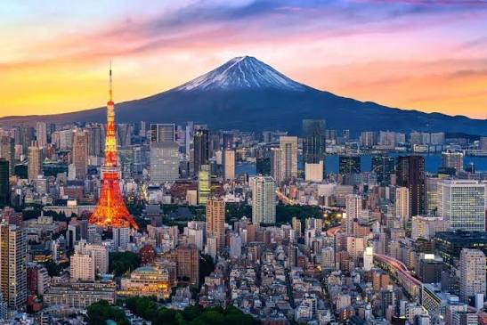
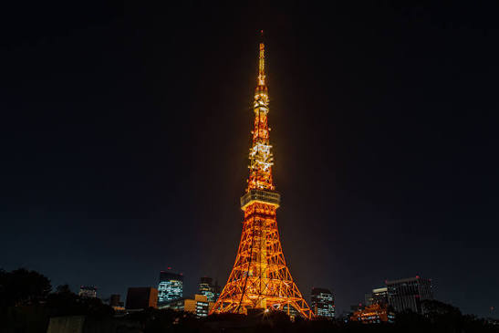

01 / DISCOVER
Where tradition meets tomorrow.
MORE THAN A DESTINATION
Tokyo is a city that never stops surprising you.
One moment, you are surrounded by bright signs
and busy crossings. A few streets away, you
might discover a quiet shrine hidden between
modern buildings.
What makes Tokyo special is the way old and
new exist side by side. Every neighborhood
has its own rhythm, atmosphere, and story
to tell.
"The best way to explore Tokyo is to get
a little lost."

02 / NEIGHBORHOODS
Slow down. Look closer.

THE QUIETER SIDE
Beyond the crowded stations and famous
landmarks, Tokyo is full of peaceful corners.
Small cafés, traditional shops, and narrow
streets invite visitors to take their time.
Spend an afternoon walking without a strict
plan. Notice the details: wooden doors,
warm lanterns, tiny gardens, and the
everyday life happening all around you.
Sometimes the most memorable places are
the ones you never planned to visit.
03 / TRAVEL PLANNER
Three Days in Tokyo
Plan your mornings, afternoons, and evenings with this simple three-day itinerary.
| Day | Morning | Afternoon | Evening |
|---|---|---|---|
| Day 1 | Asakusa Temple | Ueno Park | Shibuya |
| Day 2 | Meiji Shrine | Harajuku | Shinjuku |
| Day 3 | Tokyo DisneySea | Odaiba | |
Travel Budget
Illustrative costs in Japanese yen (JPY), not live prices. This partial budget excludes accommodation, flights, and attraction tickets.
| Category | Item | Estimated Cost |
|---|---|---|
| Transportation | Metro | ¥1,000 |
| Train | ¥1,500 | |
| Food | Lunch | ¥1,200 |
| Dinner | ¥2,000 |
04 / GALLERY
Gallery


